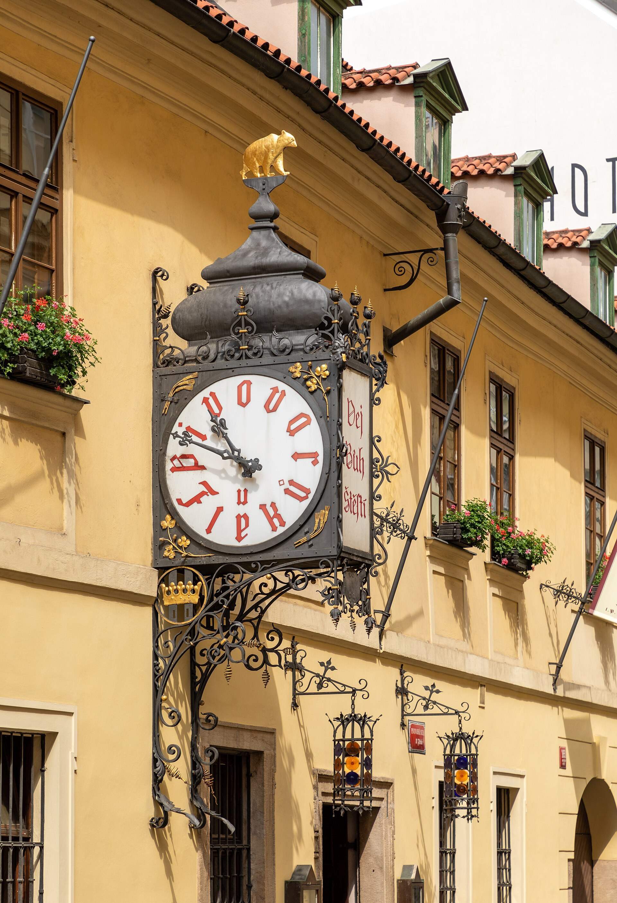

01 · New Town · house dark lager
U Fleků
U Fleků at Křemencova 11 is one of the few Central European brewery-restaurants that has been brewing on the same site for more than 500 years. The brewery’s own history says the first written document dates from 1499, when maltster Vít Skřemenec bought the house. The house beer is Flekovský tmavý ležák 13°, a dark lager. The restaurant has several historic halls and a garden. It is popular with visitors — go for the brewery, not for a quiet local’s corner.
Tip: Metro B to Národní třída, then a short walk into Křemencova. The garden is the pleasant seat when it is open; halls fill at peak meal times.
Directions: Google Maps · Apple Maps
Photo: Dietmar Rabich, CC BY-SA 4.0, via Wikimedia Commons
Sources: U Fleků: history of the brewery · ufleku.cz
See U Fleků on our Unique Pubs deck →
Find a stay near U Fleků →